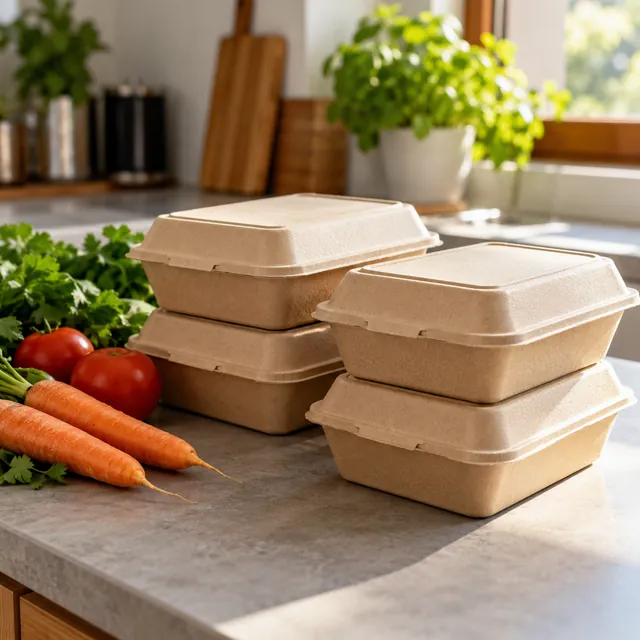
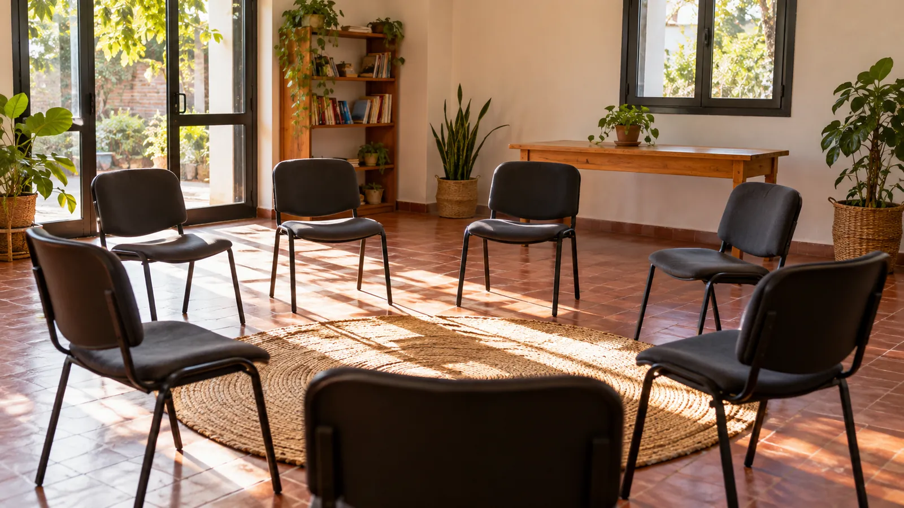
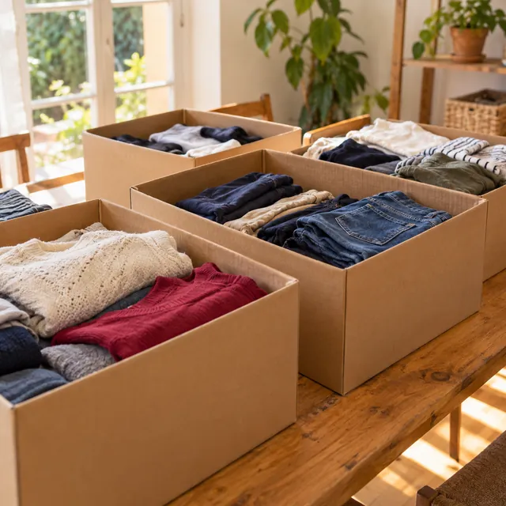
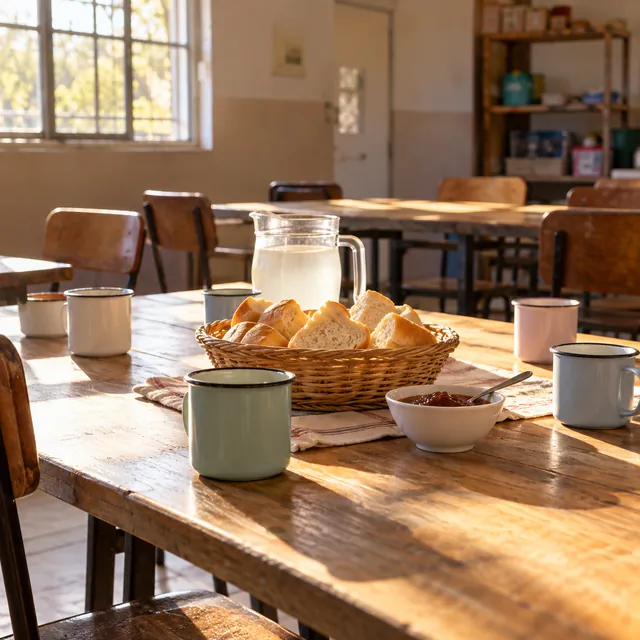
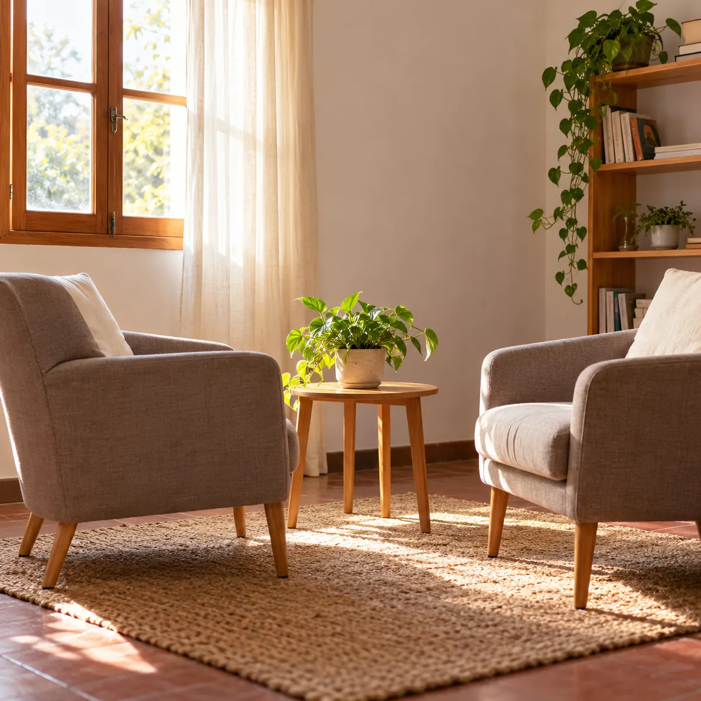
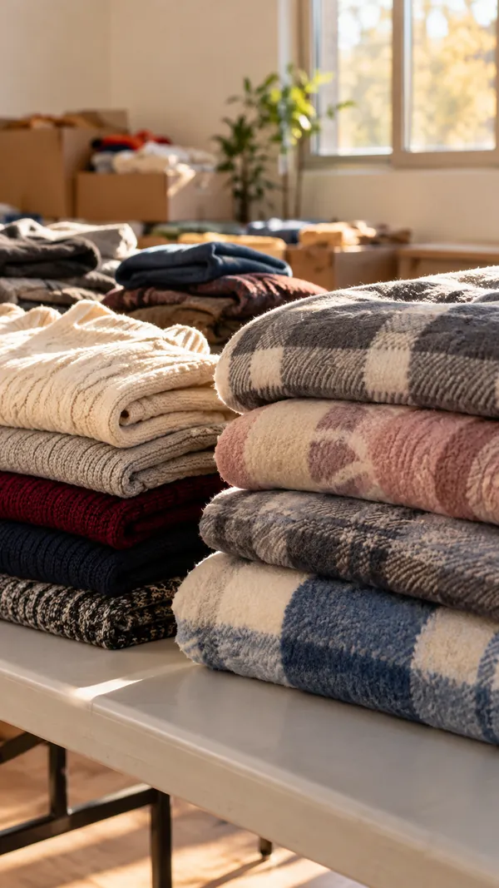
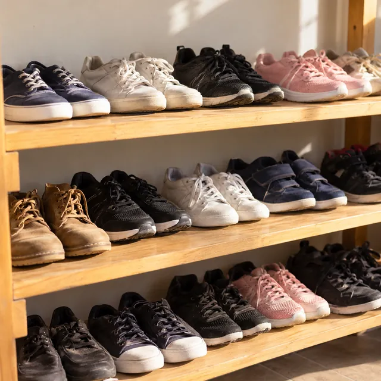
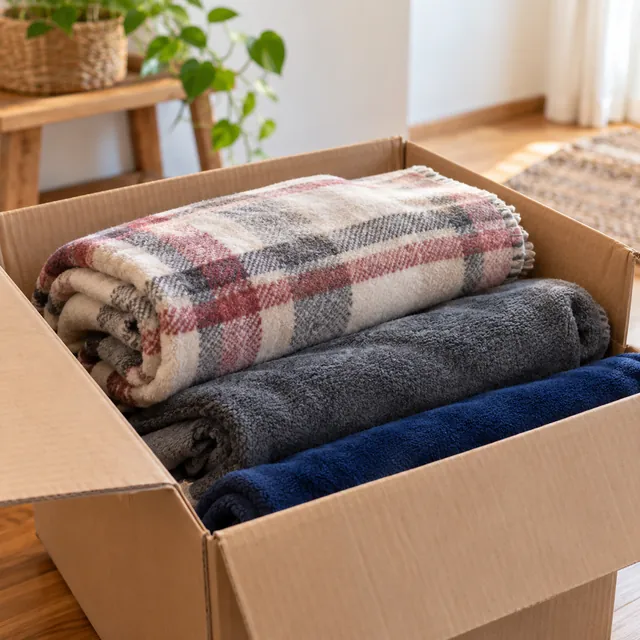

Viandas cada 15 días
Cocinamos y entregamos viandas a personas en situación de calle, cada dos semanas.
Estudiantes de Psicología Social · Trabajo comunitario
Entregamos viandas y abrigo, acompañamos merenderos y escuchamos. Lo hacemos en grupo, como parte de nuestra formación.

Más comunidad para una sociedad más justa
Quiénes somos
Somos un grupo de estudiantes de segundo año de Psicología Social. Hacemos trabajo psicosocial comunitario con personas en situación de calle y en contextos de vulnerabilidad.
Viandas, ropa, calzado y mantas para lo más urgente.
Presencia sostenida en la calle y en los merenderos.
Cada encuentro es también un espacio para hablar y armar vínculo.

Cocinamos y entregamos viandas a personas en situación de calle, cada dos semanas.

Clasificamos lo que nos donan y lo entregamos a quienes lo necesitan.

Vamos a merenderos de la zona y sumamos la mirada de la Psicología Social.
Imágenes ilustrativas
Proyecto · Concejo Deliberante de Ezeiza
Vamos a presentar ante el Concejo Deliberante de Ezeiza un proyecto que pide tres cosas:
Dispositivos de salud mental que acompañen a personas en situación de calle y en contextos de vulnerabilidad.
Lugares fijos para hablar, ser escuchado y sostener un proceso en el tiempo.
Que la escucha y la contención sirvan de camino para volver a trabajar.
¿Sos de una institución o del Concejo? Escribinos.

Un lugar para ser escuchado
Donaciones materiales
Recibimos ayuda material: ropa, calzado y mantas. Escribinos y coordinamos el retiro por WhatsApp.



Por ahora no recibimos dinero.
Tu mensaje
Hola Red Construyendo Vínculos, quiero coordinar una donación. Me queda cómodo a la mañana. ¿Cuándo pueden pasar a retirar?
o escribinos al +54 9 11 6462-6946